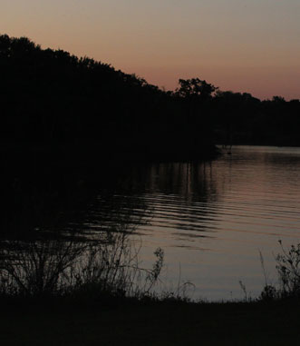
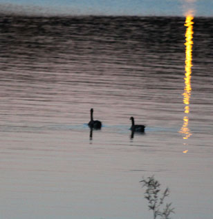
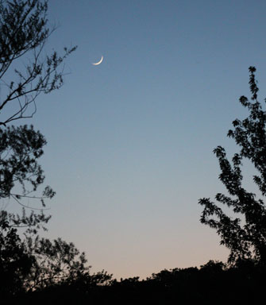
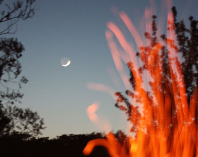
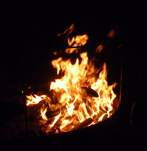

May 2013
| Eric and I spent a lovely evening at Lake
Arcadia one Saturday night. We built a fire and watched the moon
rise over the water. We also enjoyed playing with my camera, trying
to get some nice shots. It made us miss our friend Luc since he
helped me pick out that camera and we knew he would have helped us learn
to use it if he was still with us. We miss him. |
|
 |
 |
 |
 Here Eric gets a neat effect by having me whack the fire with a stick |
| Trying to capture the moon without a tripod. | |
 |
|
| Something about a fire is so relaxing, but a fire near the water takes it to a completely new level. Lovely evening. |
|